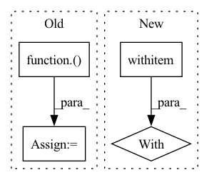

Pattern ID :11643

Before Change
@chika.main(cfg_cls=Config, strict=True)
def main(cfg):
model = MODEL_REGISTRY(cfg.model)(num_classes=10)
train_loader, test_loader = DATASET_REGISTRY("cifar10")(cfg.batch_size, num_workers=4)
optimizer = (SAM(lr=cfg.optim.lr, momentum=0.9, weight_decay=cfg.optim.weight_decay, rho=cfg.optim.rho)
if cfg.optim.name == "sam" else
homura.optim.SGD(lr=cfg.optim.lr, momentum=0.9, weight_decay=cfg.optim.weight_decay))
scheduler = lr_scheduler.CosineAnnealingWithWarmup(cfg.optim.epochs, 4, 5)
After Change
@chika.main(cfg_cls=Config, strict=True)
def main(cfg: Config):
torch.cuda.set_device(cfg.gpu)
with homura.set_seed(cfg.seed):
_main(cfg)
if __name__ == "__main__":
In pattern: SUPERPATTERN
Frequency: 3
Non-data size: 4
Instances
Fragment ID: 39473275
Project Name: moskomule/sam.pytorch
Commit Name: 700f08793657ccf203ce104684ce9de2e9e76559
Time: 2020-12-30
Author: hataya@keio.jp
File Name: cifar10.py
M Class Name: AnonimousClass
N Class Name: AnonimousClass
M Method Name: main(1)
N Method Name: main(1)
M Parent Class:
N Parent Class:
M File Name: cifar10.py
N File Name: cifar10.py
M Start Line: 57
M End Line: 79
N Start Line: 85
N End Line: 90
'>
Before Change
sigma = 0.1
f = gp.marginal_likelihood("f", X, y, noise=sigma)
p = gp.conditional("p", Xnew)
self.logp = model.compile_logp()({"p": pnew})
self.X = X
self.Xnew = Xnew
self.y = y
self.sigma = sigma
After Change
self.x_new = np.linspace(-6, 6, 20)
// Include additive Gaussian noise, return diagonal of predicted covariance matrix
with model:
self.pred_mu, self.pred_var = self.gp.predict(
self.x_new[:, None], point=self.map_full, pred_noise=True, diag=True
)
'>
Fragment ID: 39473273
Project Name: pymc-devs/pymc3
Commit Name: 8f02bea5e37d115d26cc6e4e27b4d3b51ef96c43
Time: 2022-08-31
Author: w.j.engels@gmail.com
File Name: pymc/tests/test_gp.py
M Class Name: TestMarginalVsMarginalApprox
N Class Name: TestMarginalVsMarginalApprox
M Method Name: setup_method(1)
N Method Name: setup_method(1)
M Parent Class:
N Parent Class:
M File Name: pymc/tests/test_gp.py
N File Name: pymc/tests/test_gp.py
M Start Line: 854
M End Line: 871
N Start Line: 853
N End Line: 879
'>
Before Change
assert len(self.param_groups) == 1
closure = torch.enable_grad()(closure)
self.loss = (closure().item())
bundle_index = self.build_bundle_torch_param_groups(closure)
self.loss = (closure().item())
After Change
assert len(self.param_groups) == 1
bundle_index = self.build_bundle_torch_param_groups(closure)
with torch.enable_grad():
self.loss = closure().item()
return self.loss, bundle_index
'>
Fragment ID: 39473271
Project Name: cor-opt/superpolyak.py
Commit Name: fac29ed2c72bb50e92a709ae797b4f61e0043fb5
Time: 2022-11-07
Author: vharisop@gmail.com
File Name: SuperPolyak.py
M Class Name: SuperPolyak
N Class Name: SuperPolyak
M Method Name: step(2)
N Method Name: step(2)
M Parent Class: Optimizer
N Parent Class: Optimizer
M File Name: SuperPolyak.py
N File Name: SuperPolyak.py
M Start Line: 163
M End Line: 166
N Start Line: 172
N End Line: 175